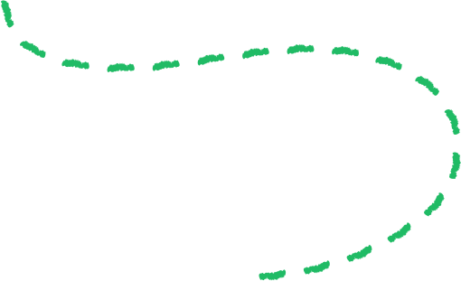
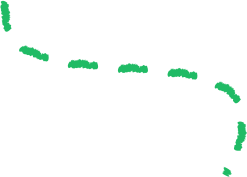
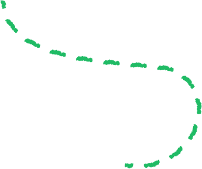
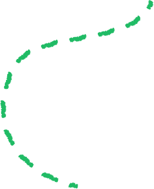
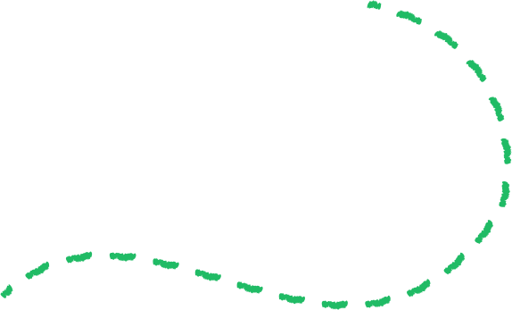
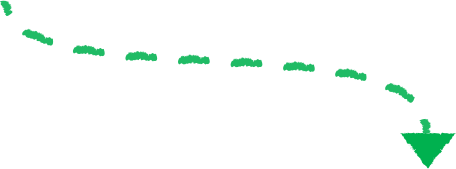

Turn your small change into big changes for the planet
When you opt in to our Green Programme

Every $0.10 you contribute to Grab rides or orders goes towards
projects that help Mother Nature

Got 2 minutes?
Swipe to check the projects that you’ll be supporting.

Did you know?
Bangkok’s air was unsafe to breathe for 200 days last year.

Your support for the
Biochar Life programme
allows us to use charcoal to fight this (no, really). How? By
turning unwanted crops into
biochar.


Biochar absorbs harmful carbon emissions & helps fertilise crops
This contribution also goes to support another local Bamboo
Biochar Project for a healthier, more sustainable future.
Go, biochar!
